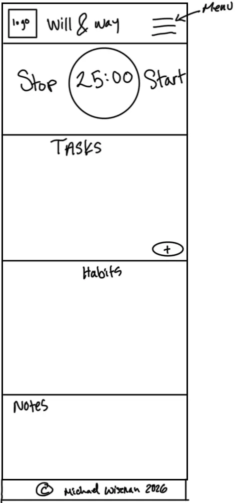
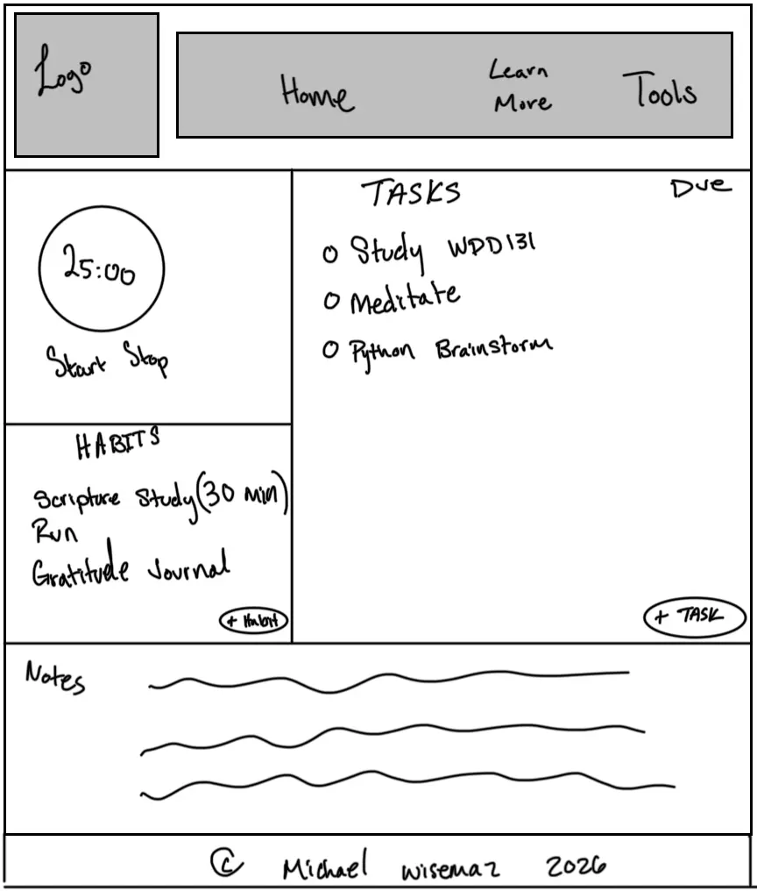

Outline
* What should I focus on right now?
* What can I do in the next 30 minutes?
* How productive was I today?
Site Purpose
The intent if the site will be to encourge good work ethic through focus and prioritization. The site will provide the tools to assist with focus and productivity, such as a pomadoro timer, a task manager, and the ability to prioritize tasks by time it takes to do them and their due date.
Scenarios
Color Scheme
Color choice 1: e3dfff
Color choice 2: d3c0cd
Color choice 3: b19994
Color choice 4: 937666
Color choice 5: 3d3a4b
Typography
Font choice 1: Open Sans: Friendly and neutral for standard body text
Font choice 2: Roboto: Geometric structure for strong, readable headings
Font choice 3: Lato: Warm and inviting for specific creative elements, buttons, or quotes
Wireframe

